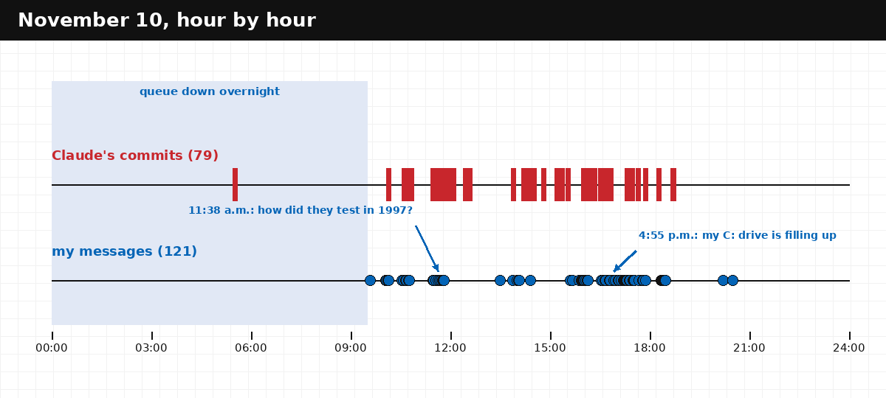
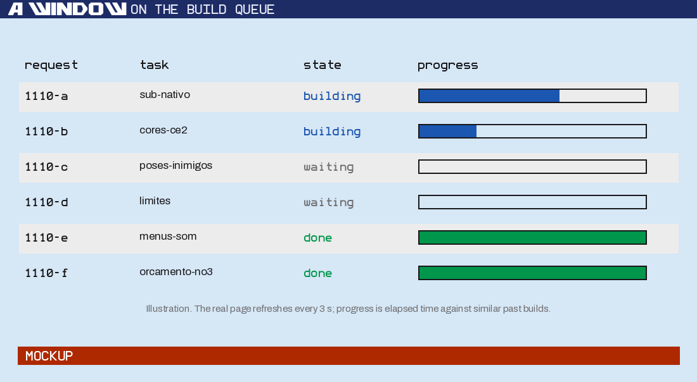
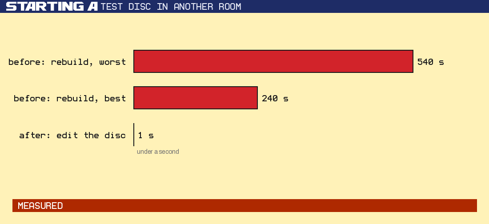
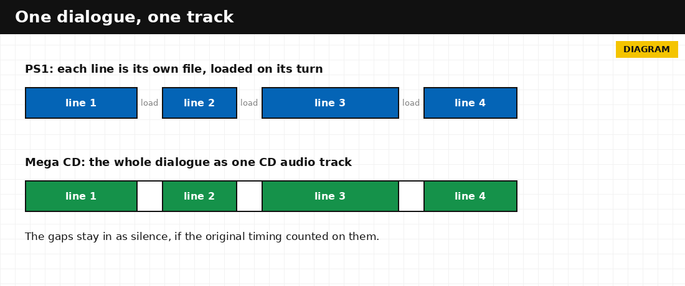
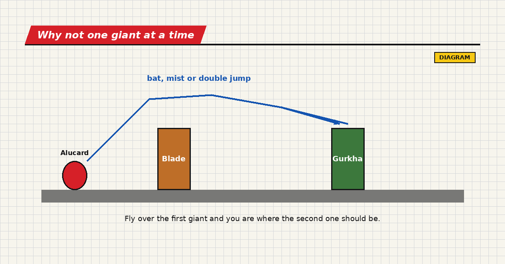
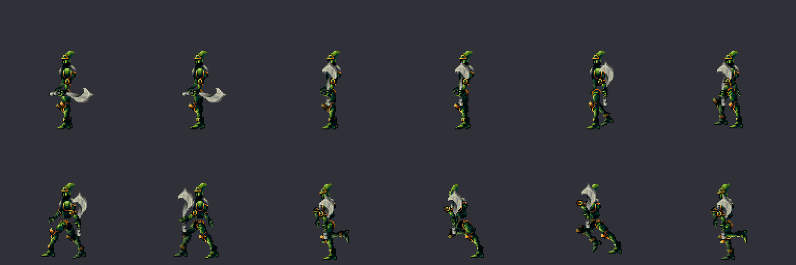
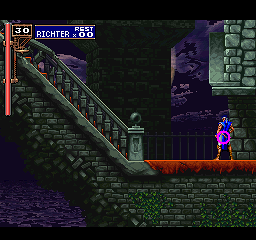
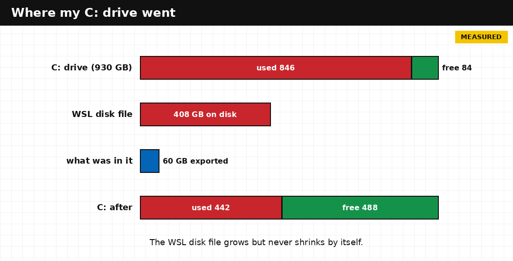

How did they test in 1997?
Draft: not published yet
I woke up on November 10 to the nine chats from the day before, all stuck. At 9:35 a.m.:
"What happened overnight? No chat managed to build anything, the wait was huge."
(Translated from Portuguese.)
The builds run in WSL, the Linux inside Windows on my desktop, through a queue. WSL was down, and with it the queue. At 10:03 I asked how to start it again, at 10:07 I told six chats it was back, and at 10:35 I asked for a way to see the queue without asking every chat. Claude wrote a small page that reads the queue folder and refreshes every few seconds. At 10:44 I asked for a progress bar column.

November 10. One commit at 5:31 a.m., then nothing until I turned the queue back on.

What the queue page shows, redrawn. The progress is the elapsed time against similar builds that already finished.
1997
At 11:38 a.m., watching builds crawl, I asked something I'd been wondering:
"Wow, I'm noticing we lose a lot of time waiting for builds to be ready! How were these tests done back in 1997?"
(Translated from Portuguese.)
Three minutes later I had my own follow-up:
"It's definitely much better not to build from scratch to test small changes. Actually, with today's precision, why do we need to build from scratch at all, except at the end of a task?"
(Translated from Portuguese.)
At 11:47 I told all nine chats to take their builds out of the queue while I sorted this out.
What came out of that chat was simple. Every test disc starts in a specific room, the one the test is about, and that room was compiled into the game. Changing it meant a new build folder, and a new folder meant a build from scratch, 4 to 9 minutes each. 343 of the builds in the queue's history had a starting room set this way. Now the room, the position and whether to skip the title live in a one-sector file on the disc, read at boot. Moving a finished disc to another room takes a script and under a second.

Starting a test in another room, before and after.
The same chat made the format converters share their caches across build folders. At 2:01 p.m. I asked how to make the change count in the other nine chats. At 2:04 I said merge, and at 2:24 I pasted the chat's instructions into all of them: pull the new main branch in and continue.
At 3:36 something was building that shouldn't have been, and at 3:40 I was confused:
"Wait, I didn't get it. The tasks were ALL stopped. I'd asked them to stop before opening the chat here with you."
(Translated from Portuguese.)
I had pasted the prompt this chat gave me, and that's what restarted them.
Stream or FM
At 3:53 p.m. I caught a leftover:
"There's no CD-DA music mode. There's stream or FM. But I'm noticing the tasks test builds with CD-DA and FM."
(Translated from Portuguese.)
The CD audio music option had been removed the day before, but chats kept building it out of habit. Now the build accepts only the two music modes that exist and fails on anything else.
CD audio still has a job: voices. The cutscenes have no music, and my worry was keeping the speech bubbles in sync with the voice lines. At 4:07 I suggested a way:
"We could group the lines of each dialogue and make them one audio file that plays in sync with the scene."
(Translated from Portuguese.)
And at 4:09 a detail I didn't want lost: if the original's timing counted on the loading time between lines, the track needs deliberate silence between them.

My idea for the voices. Whether the gaps belong in the track depends on the original's timing.
Two giants
Blade and Gurkha are two big enemies that share a room in the later version of the Castle Entrance. Drawing both was heavy. Claude's proposal was to show one giant at a time.
At 4:39 p.m. I wasn't convinced:
"How would that work? If I come in as a bat, or with Gas Cloud, or with double jump, I can pass over Blade and get to where Gurkha would be. I don't know if that's a good idea."
(Translated from Portuguese.)

The problem with one giant at a time.
Instead I asked for the project's usual approach: unify their sprites and simplify their logic into a fixed cycle. By 5:39 both giants were on a fixed cycle with their bodies as ready-made poses. On the PS1, each giant's animation is a list of key poses blended frame by frame. In the port, each key pose holds for its duration, with in-betweens only where a strike needs them. Attack windows, damage and attack choice stay the original's. The motion looks steppier, a change I asked for.

Gurkha's key poses as whole images, from that afternoon's preview.
Borrowed sounds
At 5:03 p.m. I asked if we could take some sound effects from the other games in our reference folder, Bloodlines and Rondo of Blood, in place of some of SOTN's recordings, and whether that would be cheaper or more expensive in resources. At 5:33 I asked for a comparison tool: SOTN's sound on one side, a Bloodlines sound on the other, and a "match" button. Matches replace the SOTN sound; the rest stay.


Castlevania: Bloodlines on the Mega Drive, one of the two reference games.

Rondo of Blood on the PC Engine CD, the other one. This frame was saved in our tester a day later.
At 5:52, after listening:
"These Bloodlines effects seem to be samples too."
(Translated from Portuguese.)
Which makes them no cheaper than the ones we have.
At 4:47 I had also reported a menu test: the dither didn't match the start menu's.
My C: drive
At 4:55 p.m. I noticed my C: drive was filling up fast. At 4:58 I asked whether WSL used the same disk. It did: WSL keeps its whole Linux in one disk file, and that file grows but doesn't shrink on its own.
The next hour and a half is mostly PowerShell, pasted back into the chat. Claude suggested commands, I ran them. A cleanup script for the old build folders. At 5:18 I asked whether it would hurt tasks that were finished but not merged yet. At 6:22 I reopened WSL and the space still hadn't come back. I trimmed the disk, switched it to sparse, and the file stayed at 408 GB. DiskPart froze. The command that compacts that kind of file wasn't available on my Windows.
So at 8:12 p.m. I did it the long way: exported the Linux to my E: drive (60 GB), removed it from WSL, and checked C:. Free space went from 84 GB to 488 GB. The import failed the first time because the target folder didn't exist; at 8:30 I created it.

My C: drive, from the PowerShell output I pasted that evening.
The number
79 commits, 121 messages from me, a good part of them PowerShell output. The question from 1997 paid off the most.
I decide what the port should be, draw and pick colors, and test every build. The code, tools and measurements are written by Claude (Anthropic's AI). This post was drafted by Claude from my chat messages and the project's commit history, and reviewed by me. The images are previews and diagrams Claude made, a capture of Bloodlines from my own cartridge dump, a Rondo of Blood frame saved in our tester, and a redrawn queue page.